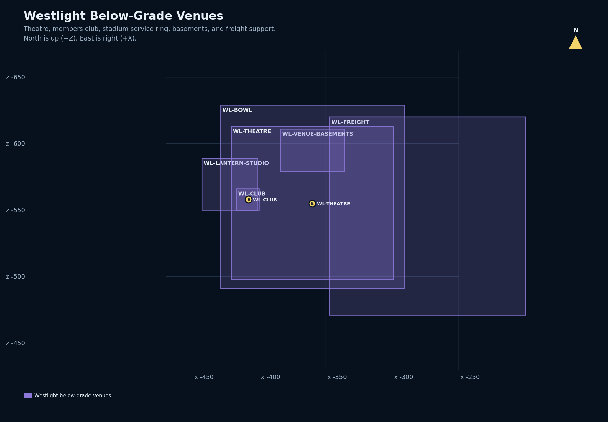

Exact district
X -443..-272, Z -640..-488. The vertical stack reaches from theatre Y18 to focal-display Y92.
Masterplan 13 · Venue operations and preservation
A vertically stacked stadium bowl, below-grade theatre and members club, anchored by an accepted four-sided focal display and evidence-based event-mode QA.
Accepted historical baseline: all 26 current durable features are complete, including the accepted focal display. This report made no live-world inspection. New work is held pending a saved-world condition survey, exact 3D ownership and current route/life-safety proof.
X -443..-272, Z -640..-488. The vertical stack reaches from theatre Y18 to focal-display Y92.
The venue is separate from Westlight District, PassageWay, the Western Approach Road and later Town Expansion Westlight modules.



Y58 Field Level, Service Ring
Y67 Main Concourse, South Vomitory
Y75 Members Terrace, Upper Concourse
Y82 Crown Walk, Press Gallery
Bounds X -429..-291, Y55..91, Z -629..-491.
Y18 Lower Lobby, Backstage Service
Y29 Orchestra Lobby, Auditorium Parterre
Y40 Upper Lobby, Balcony
Bounds X -421..-299, Y18..50, Z -613..-498.
Y35 Members Lounge, Bar and Dance Floor
Y40 Club Landing, Private Balcony
Bounds X -417..-400, Y35..44, Z -566..-550.

524 guarded forward groups and 524 target cells; zero failed groups and zero unexpected no-ops; exact rollback; 48 post views. Current durable display bounds are X -369..-351, Y 74..92, Z -568..-552, condition 95.
The durable/as-built record governs future work when prose design dimensions differ.
| Domain | Accepted / cataloged | Proposed control |
|---|---|---|
| Bowl | Four levels, eight functional room zones | Fresh seat, aisle, vomitory, accessibility and egress census |
| Theatre | Three levels, six room zones | Event-mode, lighting, backstage and audience-route regression |
| Members club | Two levels, four room zones | Public/private/service interface and condition review |
| Vertical circulation | Three stair objects; primary ladder count zero | Snapshot-bound bidirectional route proof |
| Display | Accepted guarded release and 48-view matrix | Repeat views after any sightline-affecting change |
| Regional arrival | District and structure entrances cataloged | Exact arrival contracts with approach road and district |
CATALOGED COMPLETENEW WORK HELD
Surrounding roads, high street, buildings and later attractions retain separate owners. The venue cannot claim them through broad bounds.
Gatehead at (-344, 68, -486) is near the venue north edge, but proximity is not a shared-cell contract.
PassageWay is the proper name of the shared underground tunnel system. Navigation evidence does not transfer tunnel ownership to Westlight Venue.
Sports, concert and theatre modes require distinct focal, public/service/restricted route, lighting, emergency-return and sightline definitions.
| ID | Issue | What closes it |
|---|---|---|
| WLV-H01 | Current live condition unknown | Fresh immutable saved-world and visual condition survey |
| WLV-H02 | External arrival lacks an exact contract here | Reviewed approach-road/district/venue shared-cell set |
| WLV-H03 | Life safety needs current evidence | Stairs, headroom, landings, egress, accessibility and lighting QA |
| WLV-H04 | Sightlines are mode-sensitive | Repeat representative views for each affected mode |
| WLV-H05 | Stacked scopes can collide | Exact 3D owner and transition contracts |
| WLV-H06 | Later Westlight program can blur this scope | Preserve publication identity; reconcile only exact interfaces |
Complete for planning: bind 26 durable objects, the accepted display and exact venue structure/level/entrance records.
Next: snapshot and census shells, rooms, stairs, doors, seating, vomitories, lighting, stage/field, display, signs, utilities and every transition.
Define operating layouts, prove all route classes, rerun display/theatre views and establish exact owner/interface contracts.
Authority required: maps, sections, event layouts, routes, visual simulations, exact targets, preflight, rollback and acceptance matrix.
Exact post-state/inverse proof, mode, life-safety, arrival and PassageWay transition QA, then catalog/media refresh.
The AI/source plan is MASTERPLAN.md. Primary evidence is the read-only world map database, active-interior register, interior programs, redevelopment completion record, machine QA, screen report and the linked matched media.
Derived: current feature counts and conservative interface interpretation. Not performed: internet research, live calls, fleet/API access, RCON, systemd operations, database writes or world mutation.